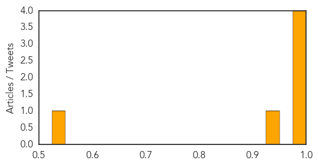
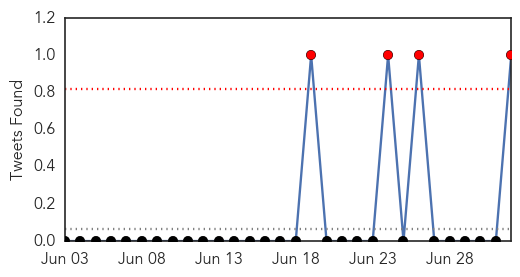

Chikungunya
30-Day Web Trend
9 alerts, 7 warnings

30-Day Twitter Trend
1 alerts, 0 warnings

Article Locations

Article Confidences
Top Articles:
- 0.999
- Sharp rise of chikungunya virus cases in the Caribbean
- 0.998
- Cayman's first chikungunya case confirmed
- 0.996
- W.Va.’s 1st case of mosquito-borne chikungunya confirmed
- 0.993
- News Scan for Jul 02, 2014
- 0.943
- First chikungunya case confirmed in Pinellas
- 0.531
- Chikungunya in Dominican Republic sickens Michigan teacher
Top Tweets:
-
No tweets found for Jul 02, 2014
Influenza
30-Day Web Trend
0 alerts, 0 warnings

30-Day Twitter Trend
0 alerts, 0 warnings

Article Locations

Article Confidences

Top Articles:
- 0.999
- Novartis begins shipment of seasonal influenza vaccines to US market for the 2014-2015 season
- 0.992
- Controversial American scientist Yoshihiro Kawaoka criticised over safety levels of research into pandemic H1N1 flu virus
- 0.969
- Controversial Scientist Devotes Himself to Making the Flu Virus Worse
- 0.958
- Two Cases Of Avian Influenza Reported In Taiwan
- 0.915
- Human infection with avian influenza A(H7N9) virus â update
- 0.908
- Are we mad to let Yoshihiro Kawaoka create a virus that could wipe out 400m people?
- 0.908
- Are we mad to let Yoshihiro Kawaoka create a virus that could wipe out 400m people?
- 0.760
- The Lancet: Viewpoints explore public health and health security in the USA and CDC's role in global health
Top Tweets:
- 0.948
- RT: New analysis of 'swine flu' pandemic conflicts with accepted views on how diseases spread. influenza transmission http:…